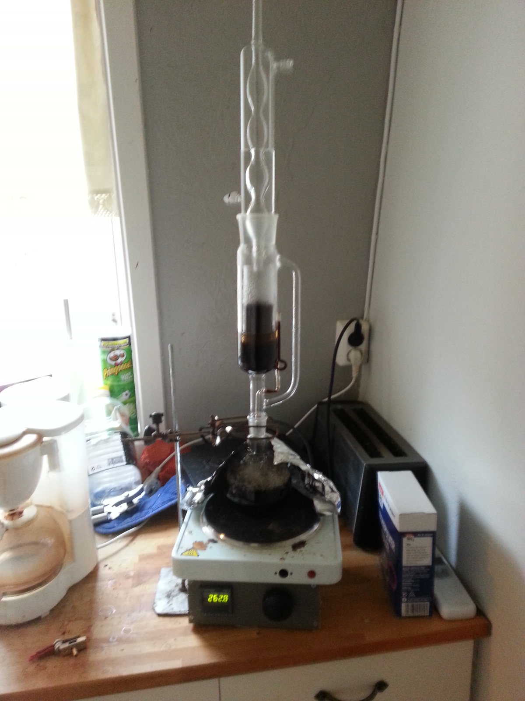

A cup of Coffee d'Soxhlet?
Have you ever had a cup of percolated coffee and thought.
"Oh man percolator coffee is the best, if it could only tast more of peat-bog"
Well, have I got good news for you! Behold Coffee d'Soxhlet!
Years ago I bought a brand new Soxhlet-extractor.
And if you get new unused glassware, you should always ask.
"Is there something edible stuff to do?"
For the Soxhlet it was obvious, as it is pretty much a coffemaker already.
But there is a differance, Because the Soxhlet recycles the water.
The grounds is placed in a glass-thimble, in the center compartment.
The water in the bottom blask, evaporate, and is condenced,over the thimble.
The center compartment has a siphon, so when the water reaches a certain level,
The coffee-soaked water pours down to the bottom flask.
The water is now free to evaporate again, an the cycle repeats.
Coffee d'Soxhlet can be characterized by the number of cycles.
1:"This just taste like earthy coffee"
2:"Who knew a bog could taste this bitter?"
3:"How can something taste more swampy than a swamp?"
4:"We were so preoccupied with whether or not we could,
we didn't stop to think if we should?"